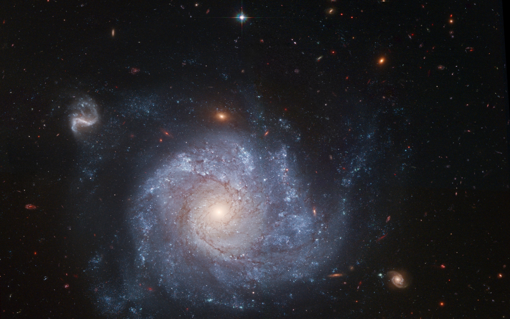
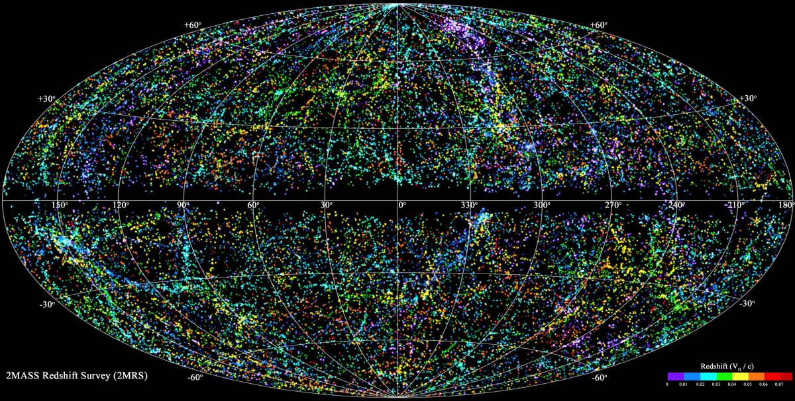

Вселенная
 Вселенная точного определения не имеет, однако астрономически ее можно описать как совокупность наблюдаемых и ненаблюдаемых, материальных и нематериальных объектов, силовых полей и прочего, содержащегося в окружающем нас пространстве, включая само пространство и исключая то, что находится за его границами, если таковые существуют. Иначе говоря, Вселенная — это все, что нас окружает.
Согласно современным представлениям, Вселенная родилась в результате Большого взрыва 13,9 млрд лет назад, и, таким образом, ее радиус не должен превышать 13,9 млрд световых лет. Вселенная заполнена как минимум 1 600 000 обнаруженных галактик, организованных в ячеистую структуру. Стенки ячеек образованы из сверхскоплений галактик, внутри стенок — пустота, войды. Сверхскопления галактик, в свою очередь, состоят из галактических скоплений, а те — из локальных групп галактик. Галактики состоят из множества различных объектов: черных дыр, звезд, межзвездного газа и т. д.
Вселенная погружена в реликтовый фон излучения, образовавшийся на ранних эпохах ее существования, когда свет Большого взрыва практически перестал взаимодействовать с материей, а составляющие его фотоны из-за расширения Вселенной перешли из видимого в микроволновый радиодиапазон. Вселенная также характеризуется такими обнаруженными, но пока не получившими объяснения сущностями, как ее ускоряющееся расширение, наличие темной материи и темной энергии, а также подавляющее преобладание материи над антиматерией.
С течением времени понятие о Вселенной менялось от геоцентрической системы Птолемея, гелиоцентрической системы Коперника, завершившись серией революций в ХХ веке, давших миру Общую теорию относительности, красное смещение Хаббла, открытие черных дыр, темной материи, темной энергии и многого другого. В настоящее время Вселенную как бы заново открывают нам космические обсерватории и наземные телескопы с адаптивной оптикой.
Вселенная точного определения не имеет, однако астрономически ее можно описать как совокупность наблюдаемых и ненаблюдаемых, материальных и нематериальных объектов, силовых полей и прочего, содержащегося в окружающем нас пространстве, включая само пространство и исключая то, что находится за его границами, если таковые существуют. Иначе говоря, Вселенная — это все, что нас окружает.
Согласно современным представлениям, Вселенная родилась в результате Большого взрыва 13,9 млрд лет назад, и, таким образом, ее радиус не должен превышать 13,9 млрд световых лет. Вселенная заполнена как минимум 1 600 000 обнаруженных галактик, организованных в ячеистую структуру. Стенки ячеек образованы из сверхскоплений галактик, внутри стенок — пустота, войды. Сверхскопления галактик, в свою очередь, состоят из галактических скоплений, а те — из локальных групп галактик. Галактики состоят из множества различных объектов: черных дыр, звезд, межзвездного газа и т. д.
Вселенная погружена в реликтовый фон излучения, образовавшийся на ранних эпохах ее существования, когда свет Большого взрыва практически перестал взаимодействовать с материей, а составляющие его фотоны из-за расширения Вселенной перешли из видимого в микроволновый радиодиапазон. Вселенная также характеризуется такими обнаруженными, но пока не получившими объяснения сущностями, как ее ускоряющееся расширение, наличие темной материи и темной энергии, а также подавляющее преобладание материи над антиматерией.
С течением времени понятие о Вселенной менялось от геоцентрической системы Птолемея, гелиоцентрической системы Коперника, завершившись серией революций в ХХ веке, давших миру Общую теорию относительности, красное смещение Хаббла, открытие черных дыр, темной материи, темной энергии и многого другого. В настоящее время Вселенную как бы заново открывают нам космические обсерватории и наземные телескопы с адаптивной оптикой.
Есть ли конец у Вселенной?
Научные исследования последних лет дают соблазнительные намеки на то, что Вселенная действительно не безгранична, более того – она имеет форму.

Подобные высказывания сродни тем великим идеям, которые кардинально меняют взгляд на наше место в этом мире. Один из таких переворотов в сознании произошел в 1543-м году, когда Николай Коперник показал, что Земля – не центр Вселенной. В 20-е годы XX века Эдвин Хаббл, заметив, что галактики во Вселенной отдаляются друг от друга, дал жизнь идее о том, что наша Вселенная не существовала вечно, а образовалась в результате определенного события – Большого взрыва. Теперь мы на пороге нового открытия. Если пределы Вселенной найдутся, мы столкнемся с новым еще более трудным вопросом: а что там – по ту сторону границ?
Ориентируемся по звездам
Бесконечность Вселенной подразумевает, что она должна быть бесконечна не только в пространстве, но и во времени, а значит, иметь бесчисленное количество звезд. В этом случае наше небо было бы сплошь усеянным светилами и ослепительно ярким круглые сутки. Однако небесная тьма свидетельствует о том, что космос не существовал вечно. По распространенной теории, все началось с Большого взрыва, который дал возможность самому существованию и расширению материи. Уже сама эта концепция опровергает идею вечности Вселенной, а значит, подрывает и веру в ее беспредельность. В то же время теория Большого взрыва создает определенные трудности для астрономов, ищущих границы нашего космического пространства.
«Дело в том, что путешествия на огромные расстояния занимают световые годы, а, стало быть, ученые всегда получают устаревшие данные. Пространство, проходимое светом в ранней Вселенной, выросло благодаря ее последующему расширению. Ближайшие к нам звезды относительно юны, с отдаленными объектами счет идет уже на тысячи лет, а если посмотреть на другие галактики, то на миллиарды. При этом мы видим далеко не все галактики. 13,7 млрд лет – вот доступный нам максимум», – поясняет Нил Корниш, астрофизик из Монтанского Государственного Университета. Своеобразный барьер для нашего зрения представляет собой реликтовое излучение, образовавшееся примерно через 380 тысяч лет после Большого взрыва, когда Вселенная расширилась и остыла настолько, что появились атомы. Это излучение- что-то вроде детской фотографии космоса, на которой он запечатлен еще до того, как появились звезды. За ним могут существовать как границы, так и бесконечно продолжающаяся Вселенная. Но, невзирая на мощность телескопов, эта область остается невидимой.
Космическая музыка
Реликтовое излучение мешает ученым вглядеться в самые дальние дали космоса, но в то же время оно несет в себе весьма ценную информацию, заключающуюся в микроволновом фоне. Ученые предполагают: будь Вселенная неограниченных размеров, в ней можно было бы найти волны всех вероятных длин. Однако фактически волновой спектр космоса очень узок: по-настоящему крупных волн аппарат NASA WMAP, предназначенный для изучения реликтового излучения, ни разу не обнаружил. «Вселенная обладает свойствами музыкального инструмента, внутри которого длина волн не может превосходить его длину. Мы поняли, что Вселенная не вибрирует на длинных волнах, что стало подтверждением ее конечности», – говорит Жан Пьер Люмине из Парижской обсерватории во Франции.

Дело за малым – определить ее границы и форму. Глен Старкманн, физик из Канады, работающий в Кливлендском университете Кейс Вестерн, полагает, что нашел способ определить границы Вселенной, даже если они дальше зоны нашей видимости. Это можно сделать опять-таки с помощью волн. «Звуковые волны, распространившиеся по Вселенной во времена ее молодости, могут поведать многое. От формы Вселенной, как, например, от формы барабана, зависит, какого типа вибрации в ней возникнут», – говорит Глен. Его команда планирует применить спектральный анализ к нашей Вселенной, чтобы на основе издаваемых ею звуков определить ее форму. Правда, эти исследования долгосрочные, и на поиски ответа могут уйти годы.